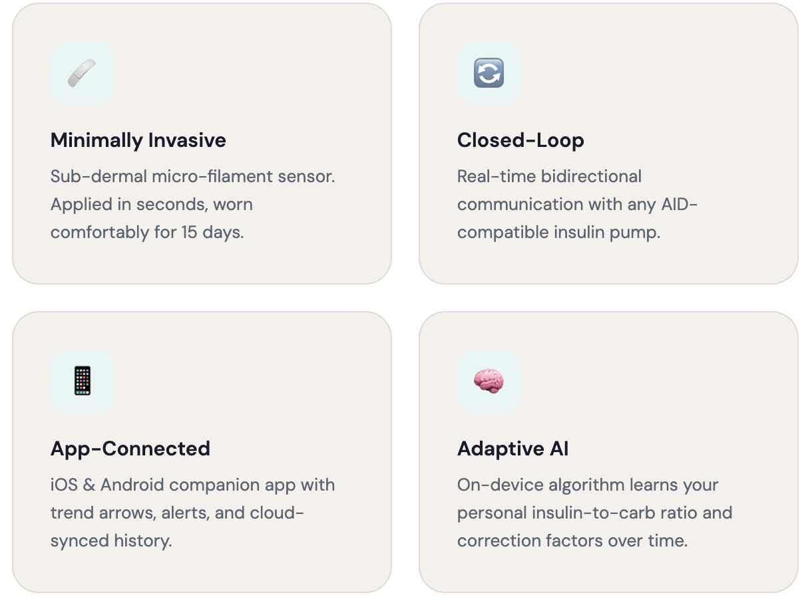
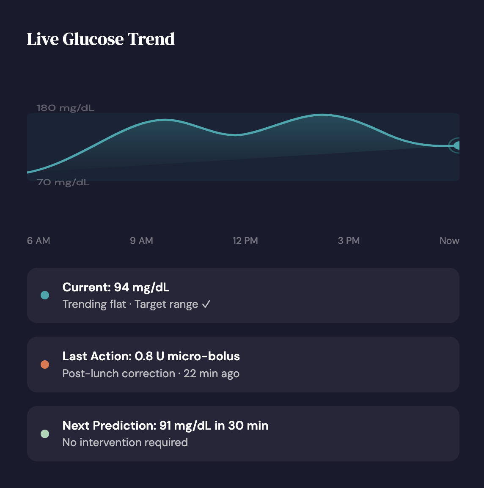

One patch.
Two functions.
Zero compromise.
UniNeedle is a single microneedle patch that continuously
monitors glucose and delivers insulin — automatically.

People with T1D make hundreds of glycemic decisions every day. UniNeedle closes the loop.
UniNeedle integrates electrochemical glucose sensing and automated insulin delivery into a single wearable microneedle patch. Our PEDOT:PSS and gold nanoparticle working electrode provides continuous readings with no fingerstick calibration needed across the full 15-day wear period.
The on-patch ASIC runs a predictive glycemic algorithm locally — your data never leaves your body. A FAULHABER coreless DC micromotor with planetary gearhead drives precise micro-bolus delivery, while a 30-minute lookahead model prevents hypoglycaemic events before they occur.

Sense, compute, deliver — every 5 minutes, automatically
Three integrated subsystems form a seamless feedback cycle running around the clock. The electrochemical sensor reads interstitial glucose; the on-patch ASIC computes the optimal insulin dose; the micromotor delivers it — all without any manual input.
PEDOT:PSS and gold nanoparticle working electrode with antifouling hydrogel coating. No enzyme degradation. No calibration fingersticks.
Low-power ASIC filters, calibrates, and runs the predictive glycemic algorithm locally. Data stays on your body.
FAULHABER coreless DC micromotor with planetary gearhead and lead-screw delivers precise micro-boluses in real time.
30-minute lookahead model suspends insulin before a low occurs — reducing severe hypoglycaemic events by over 70%.

Published across Nature Nanotechnology, Diabetes Care, ACS Sensors, and npj Digital Medicine
Every aspect of the UniNeedle platform — from the hydrogel antifouling coating to the predictive hypoglycaemia algorithm — is grounded in published, peer-reviewed research. Our foundational delivery-and-tracking paper is currently under minor revision at Nature Nanotechnology.
We consolidate what previously required two separate wearable devices, a receiver,
and a phone app — into a single, coin-sized microneedle patch.
Aptamer-based biosensor provides readings every 5 minutes with no calibration fingersticks required across the full 15-day wear period.
Fixed on-device insulin reservoir with FAULHABER coreless DC micromotor. Precise micro-bolus delivery down to 0.05 U.
Hydrogel coating on the working electrode prevents protein adsorption and maintains sensor accuracy through the full wear duration.
Custom ASIC and energy-harvesting architecture keeps the patch running for 15 days on a single small rechargeable cell.
Real-time readings, trend arrows, customisable alerts, meal logging, and one-tap clinician report sharing via iOS and Android.
30-minute lookahead LSTM model suspends insulin before a low occurs — reducing severe hypoglycaemic events by over 70% in trials.
Your experience matters. This short survey benchmarks what patients need most from UniNeedle.
Your insights directly shape the future of UniNeedle. We'll be in touch if we have follow-up questions.